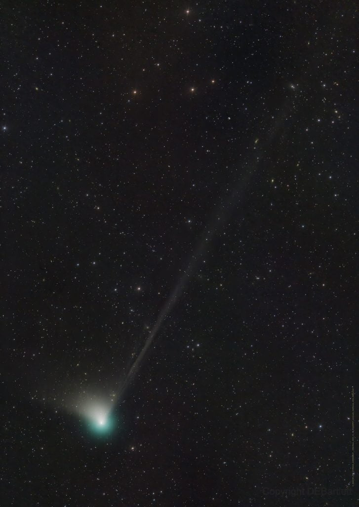
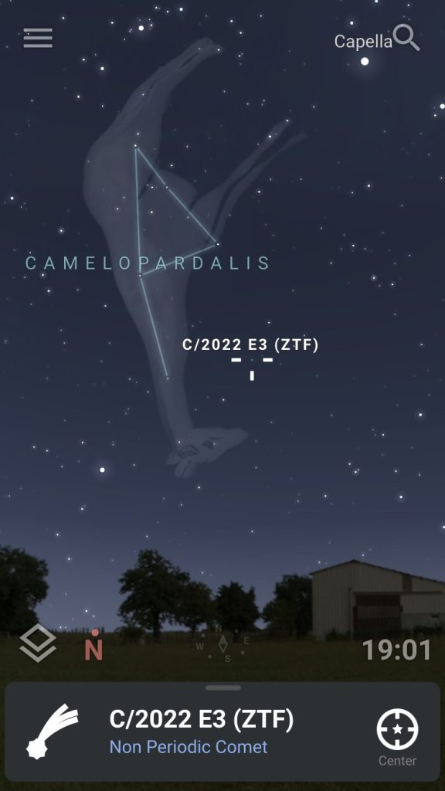

C/2022 E3 (ZTF) comet လို့ အမည်ပေးထားတဲ့ ဒီ ကြယ်တံခွန်ဟာ နေကို နှစ် ၅၀,၀၀၀ မှ တစ်ကြိမ် ပတ်တဲ့ ကြယ်တံခွန် ဖြစ်ပါတယ်။ ဒါ့ကြောင့် ဒီ ကြယ်တံခွန်ကို ကမ္ဘာက နောက်ဆုံး မြင်တွေ့ ခဲ့တာသည် လွန်ခဲ့တဲ့ နှစ် ၅၀,၀၀၀ ခန့်က ဖြစ်ပါတယ်။ ဒီကာလဟာ ကမ္ဘာပေါ်မှာ ရေခဲခေတ် ကျရောက်နေတဲ့ ကာလ ဖြစ်ပါတယ်။
ဒီ ကြယ်တံခွန်ဟာ လာမယ့် ဖေဖော်ဝါရီ လ ၁ ရက်နေ့မှာ ကမ္ဘာနဲ့ မိုင် ၂၆ သန်း အကွာအထိ နီးနီးကပ်ကပ် ရောက်ရှိလို့ လာမှာ ဖြစ်ပါတယ်။
ဒီ ကြယ်တံခွန်ကို အခုအခါ ကမ္ဘာနေ နက္ခတ်ကြည့် မှန်ပြောင်းတွေနဲ့ စတင် မြင်တွေ့ နိုင်ပြီ ဖြစ်ပါတယ်။ မကြာမီ ဇန်နဝါရီ လကုန်ပိုင်း လောက်ကစလို့ သာမန် မျက်စေ့နဲ့ မြင်တွေ့နိုင် တော့မှာ ဖြစ်တယ်လို့ ဆိုပါတယ်။
ကြည်လင်တဲ့ ညတွေမှာ ဆိုရင် သာမန် မှန်ပြောင်းတွေ အသုံးပြုပြီး တော့လဲ ကြည်လင် ထင်ရှားစွာ မြင်တွေ့ နိုင်မယ်လို့ ဆိုပါတယ်။
ဒီ ကြယ်တံခွန်ကို လေ့လာနေတဲ့ နက္ခတ် ပညာရှင် တွေရဲ့ အဆိုအရ သူ့ရဲ့ အရောင်ဟာ စိမ်းပြာရောင် ဖြစ်ပြီး ရွှေရောင် အမြီးတန်း ပါရှိတယ်လို့ ဆိုပါတယ်။
ဒီ ကြယ်တံခွန်ကို ပြီးခဲ့တဲ့ ၂၀၂၂ မတ်လ တုန်းကမှ Zwicky Transient Facility (ZTF) မှန်ပြောင်းနဲ့ ရှာဖွေ တွေ့ရှိခဲ့ ကြတာ ဖြစ်ပါတယ်။
ဒီ ရှာဖွေတွေ့ရှိ ပြီးတဲ့ နောက်မှာတော့ ဒီ ကြယ်ကြယ်တံခွန်ရဲ့ အရောင်ဟာ တဖြည်းဖြည်း ပိုပြီး တောက်ပလို့ လာခဲ့ပါတယ်။ အခု အချိန်မှာတော့ ဒီ ကြယ်တံခွန်ဟာ ကမ္ဘာ မြောက်ခြမ်းက Corona Borealis နက္ခတ် ခွင် အတွင်းမှာ ရွှေ့လျား ခရီးနှင်လျှက် ရှိနေပါတယ်။

ဒီ ကြယ်တံခွန်ဟာ နေနဲ့ အနီးဆုံးကို လာမယ့် ဇန်နဝါရီ ၁၂ ရက်မှာ ရောက်ရှိမှာ ဖြစ်ပါတယ်။ ကမ္ဘာနဲ့ အနီးဆုံး ကိုတော့ ဖေဖော်ဝါရီ ၁ ရက်မှာ ရောက်ရှိပါမယ်။ ဒီ ကြယ်တံခွန်ရဲ့ အလင်းဟာ ကမ္ဘာနဲ့ နီးကပ်ချိန်မှာ ဘယ်လောက် တောက်ပမလဲ ဆိုတာကတော့ အတိအကျ ကြိုတင် ခန့်မှန်းဖို့ ခဲယဉ်းပါတယ်။ ဒါပေမယ့် မှောင်မိုက်တဲ့ လမိုက်ည တွေမှာတော့ မှန်ဘီလူ မပါပဲ သာမန် မျက်စေ့နဲ့ ခပ် မှိန်ပျပျ တွေ့မြင် ကြရမှာ ဖြစ်ပါတယ်။
ဖေဖော်ဝါရီလ ရောက်ရင်တော့ ကမ္ဘာ့ မြောက်ခြမ်းကနေ ကောင်းကောင်း မြင်တွေ့နိုင် လောက်အောင် တောက်ပလာ မယ်လို့ ဆိုပါတယ်။
ဒီ ကြယ်တံခွန်ကို ကြည့်ဖို့ဆိုရင် အရင်ဆုံး မြေပြင်က အလင်းရောင် သိပ်မဟပ်တဲ့ မှောင်မိုက်တဲ့ နေရာ တခုက ကြည့်ဖို့ လိုပါတယ်။ မြန်မာ ပြည်မှာတော့ တောပိုင်းတွေဟာ ညဖက်ဆို မှောင်မိုက် နေတာမို့ သိပ် အခက်အခဲ ရှိမယ် မထင်ပါဘူး။
ပြီးရင် အမှောင်ထဲမှာ မျက်လုံး ကျင့်သားရအောင် နာရီဝက်ခန့် နေရမှာ ဖြစ်ပါတယ် (ဒီအချိန် ဖုန်းမသုံးဖို့ အလွန် အရေး ကြီးပါတယ်။)
သူ့ရဲ့ နေရာ အတိအကျ သိဖို့ ဆိုရင်တော့ ဖုန်းမှာ ထည့်သွင်းလို့ ရတဲ့ App တခုခုနဲ့ အလွယ်တကူ ရှာဖွေ နိုင်မှာ ဖြစ်ပါတယ်။ ကျွန်တော်ကတော့ Stellarium App ကို အသုံးပြု ပါတယ်။ အန်းဒရွိုက်ရော ပန်းသီးရောမှာ ထည့်သွင်းလို့ ရပါတယ်။
Stellarium မှာ C/2022 E3 လို့ ရိုက်ထည့်လိုက်ရင် ကြယ်တံခွန်ရဲ့ နာမည် ပေါ်လာမှာ ဖြစ်ပြီး နှိပ်လိုက်ရင် ကြယ်တံခွန် တည်နေရာကို ပြပေးမှာ ဖြစ်ပါတယ်။
